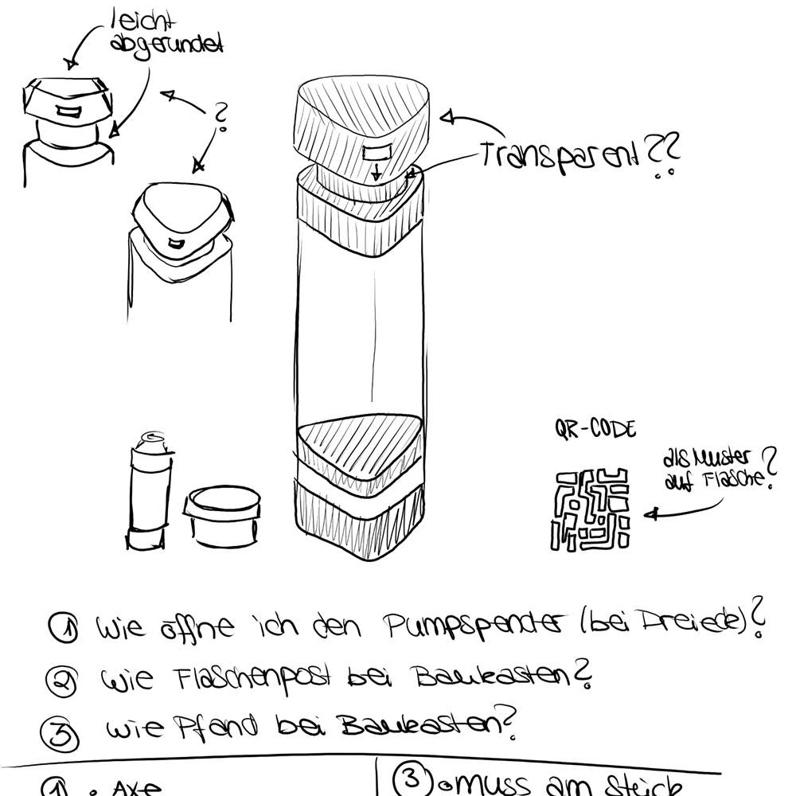
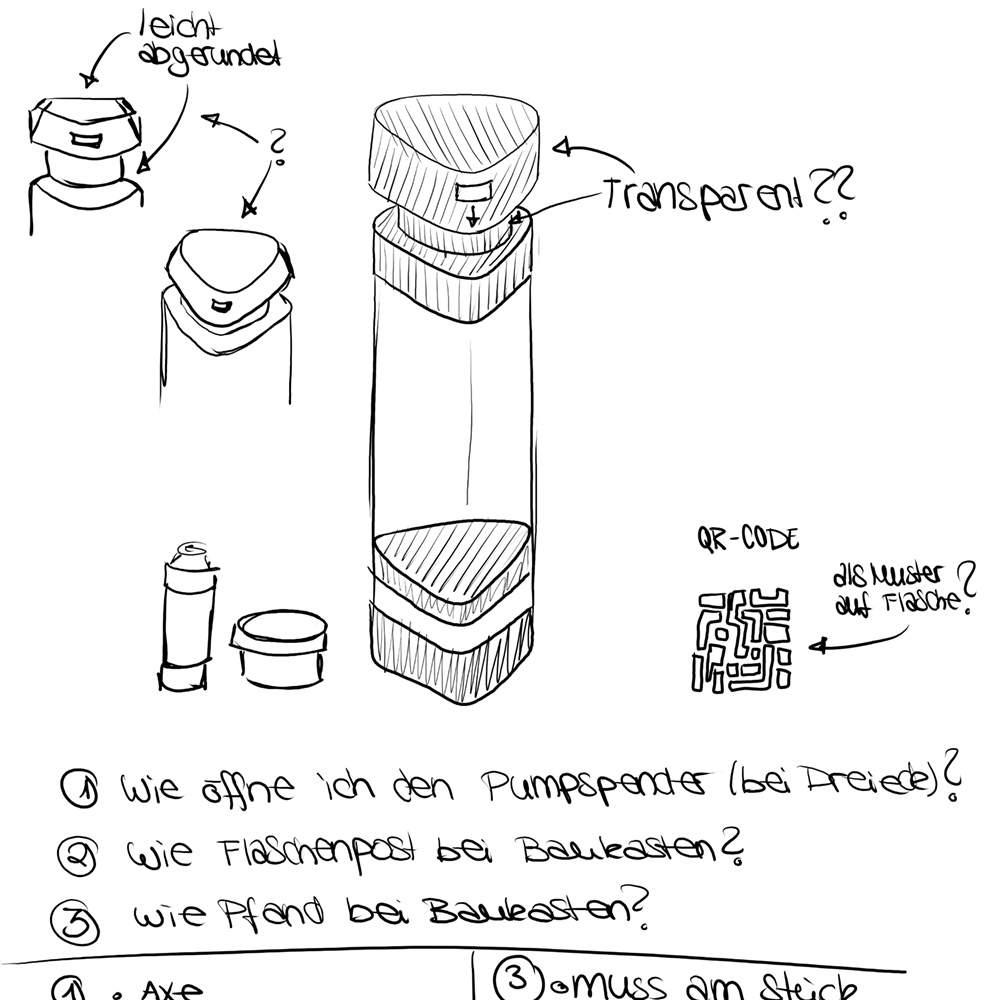
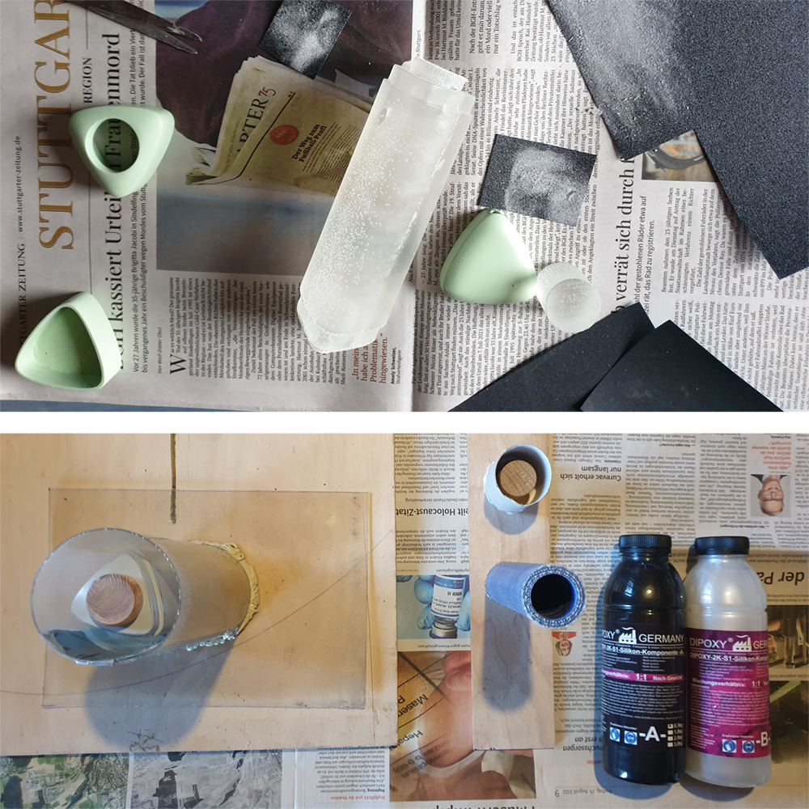
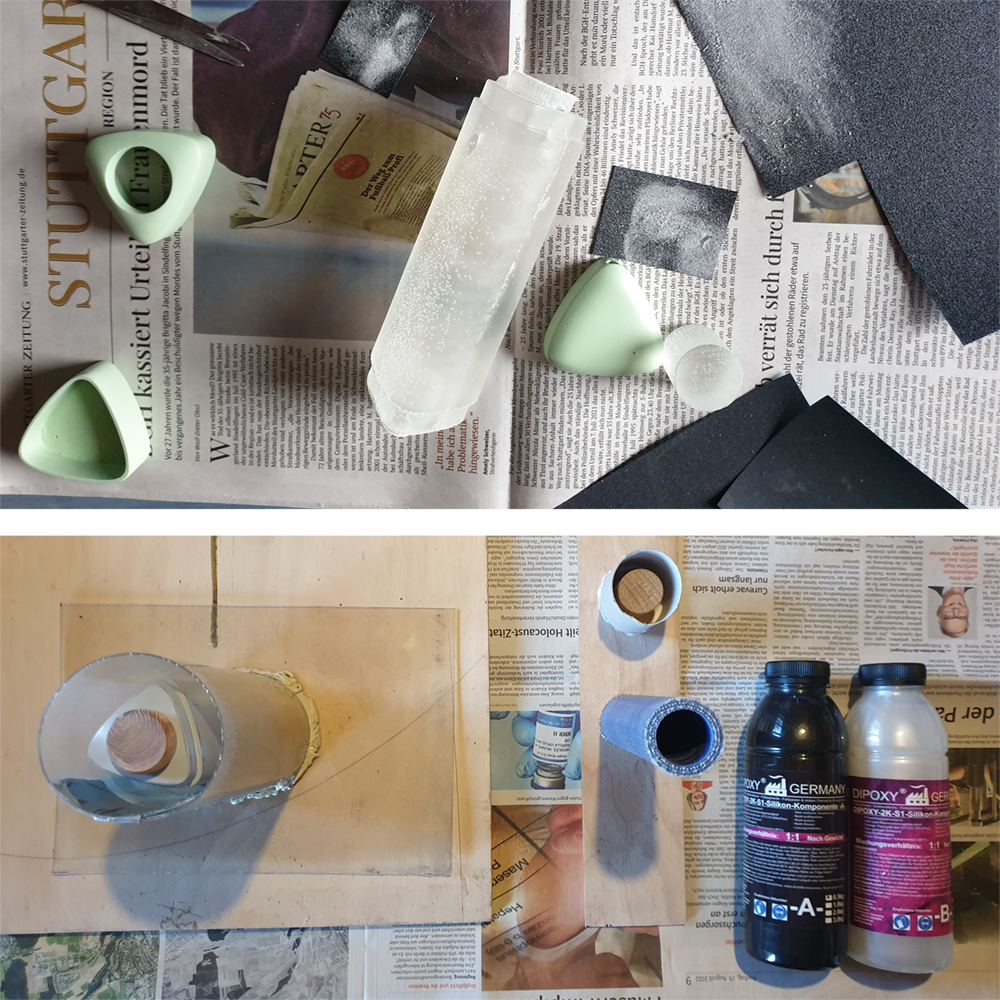

REFRESH

Packaging
The consumption of bodycare products is increasing significantly, and so is the burden of packaging waste. The ReFresh bottle is designed to meet all the requirements of the system developed here. A shampoo bottle was created as a pump dispenser. This pump dispenser works via vacuum. The transparency of the bottle should reflect the transparency of the system and also show the performance of mixing the shampoo. The individual elements of the packaging are mainly plugged or only screwed. This simplifies the cleaning of the packaging. It also makes it possible to replace damaged elements or to recycle the used materials.


System
The developed system is a completely closed system, which nevertheless offers several options for the consumer and covers very many of the consumer's motivational reasons for buying a shampoo.
Flaschenpost
"Flaschenpost", which means message in a bottle in German, is a system which should be easy to understand, be informative and transparent for every consumer. For this purpose, a QR code is printed on the bottom of the bottle. When this is scanned, different options are offered. It also offers interaction with other consumers through the "message in a bottle" and shows what happens to the bottle after use.
Designs process
 

 
